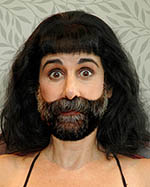

 |
Philosophy
Electrolysis is the only permanent method of hair removal, as determined by the FDA, and should be performed by a qualified professional. Inferior work provides inferior results which can consume hours of unnecessary treatment and damage the skin. Hair growth and tenacity is different for each individual and determined by heredity and previous methods of hair removal. Learn more at www.electrology.com
Method
New clients always start with a complimentary consultation where history, desired results and health issues are discussed. Short wave, or thermolysis is used and is the fastest, most effective and least uncomfortable method of electrolysis. The work is done with accurate and precise insertions using insulated disposable probes that require less time than other methods, leading to less irritation and less discomfort. All clients are instructed on post electrolysis skin care to minimize potential irritation.
Service
15 minutes - $52
30 minutes - $80
45 minutes - $105
1 hour - $130